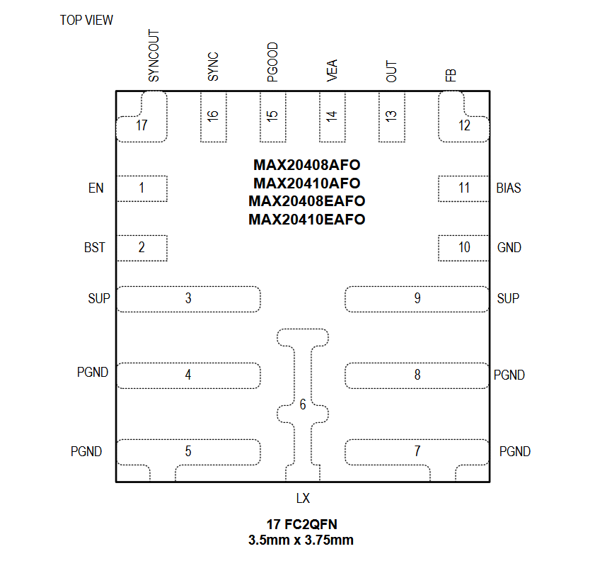
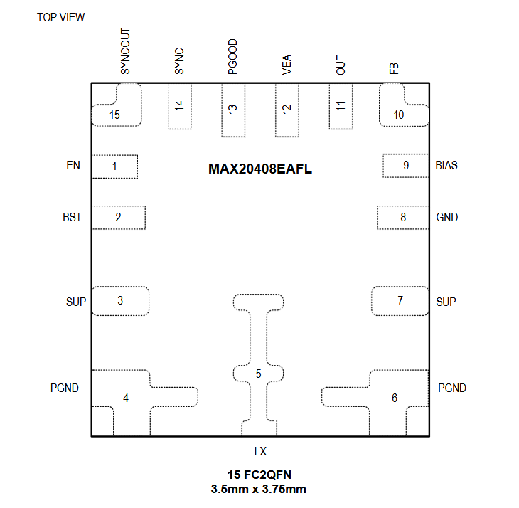

MAX20408 / MAX20410 / MAX20408E / MAX20410E

Pin Description
| PIN | NAME | FUNCTION |
|---|---|---|
| 1 | EN | High-Voltage-Compatible Enable Input. Drive EN high to enable the buckconverter. |
| 2 | BST | High-Side Gate Driver Supply. Connect a 0.1μF ceramic capacitor between BST and LX. |
| 3 | SUP | IC Supply Input and Internal High-Side Switch Supply Input. Bypass SUP to PGND with 0.1μF and 4.7μF ceramic capacitors as close as possible. Both SUP pins are internally connected. |
| 4, 5 | PGND | Power Ground. Connect all PGND pins together. |
| 6 | LX | Buck Inductor Connection. Connect an inductor from LX to the buck output. LX is high impedance when the IC is disabled. |
| 7, 8 | PGND | Power Ground. Connect all PGND pins together. |
| 9 | SUP | IC Supply Input and Internal High-Side Switch Supply Input. Bypass SUP to PGND with 0.1μF and 4.7μF ceramic capacitors as close as possible. Both SUP pins are internally connected. |
| 10 | GND | Analog Ground. Connect GND and PGND through start connection to the PCB ground plane. |
| 11 | BIAS | 1.8V Internal Linear Regulator Output. Connect BIAS to ground with a minimum of 2.2μF ceramic capacitor. |
| 12 | FB | Feedback Input. Connect FB to a resistor-divider between OUT and GND to adjust the output voltage between 0.8V and 10V. Connect FB to BIAS for fixed output voltage. |
| 13 | OUT | Output Voltage Sense Input. The buck converter uses OUT to sense output voltage when FB is connected to BIAS. |
| 14 | VEA | Internal Voltage Loop Error Amplifier Output. Connect VEA of the controller and target together in dual-phase operation. Leave VEA open for single-phase operation. |
| 15 | PGOOD | Open-Drain Power-Good Output. The PGOOD is low if the buck output voltage falls below 93% (typ) of regulation voltage. The PGOOD becomes high impedance when the buck output voltage rises above 94% (typ) of its regulation voltage. The PGOOD asserts low during soft-start. Connect PGOOD to BIAS or a positive voltage lower than 5.5V with a pull-up resistor to indicate buck output status. |
| 16 | SYNC | External Clock Synchronization Input. Connect SYNC low to enable skip-mode operation. Connect SYNC high for FPWM operation. Connect a valid external clock signal to SYNC to enable external clock synchronization |
| 17 | SYNCOUT | 180° Out-of-Phase Clock Output. In dual-phase operation, connect SYNCOUT to BIAS to configure the IC as a target, and connect SYNCOUT of the controller to SYNC of the target. Leave SYNCOUT open in single-phase operation. |
MAX20408EAFL

Pin Description
| PIN | NAME | FUNCTION |
|---|---|---|
| 1 | EN | High-Voltage-Compatible Enable Input. Drive EN high to enable the buckconverter. |
| 2 | BST | High-Side Gate Driver Supply. Connect a 0.1μF ceramic capacitor between BST and LX. |
| 3 | SUP | IC Supply Input and Internal High-Side Switch Supply Input. Bypass SUP to PGND with 0.1μF and 4.7μF ceramic capacitors as close as possible. Both SUP pins are internally connected. |
| 4 | PGND | Power Ground. Connect all PGND pins together. |
| 5 | LX | Buck Inductor Connection. Connect an inductor from LX to the buck output. LX is high impedance when the IC is disabled. |
| 6 | PGND | Power Ground. Connect all PGND pins together. |
| 7 | SUP | IC Supply Input and Internal High-Side Switch Supply Input. Bypass SUP to PGND with 0.1μF and 4.7μF ceramic capacitors as close as possible. Both SUP pins are internally connected. |
| 8 | GND | Analog Ground. Connect GND and PGND through start connection to the PCB ground plane. |
| 9 | BIAS | 1.8V Internal Linear Regulator Output. Connect BIAS to ground with a minimum of 2.2μF ceramic capacitor. |
| 10 | FB | Feedback Input. Connect FB to a resistor-divider between OUT and GND to adjust the output voltage between 0.8V and 10V. Connect FB to BIAS for fixed output voltage. |
| 11 | OUT | Output Voltage Sense Input. The buck converter uses OUT to sense output voltage when FB is connected to BIAS. |
| 12 | VEA | Internal Voltage Loop Error Amplifier Output. Connect VEA of the controller and target together in dual-phase operation. Leave VEA open for single-phase operation. |
| 13 | PGOOD | Open-Drain Power-Good Output. The PGOOD is low if the buck output voltage falls below 93% (typ) of regulation voltage. The PGOOD becomes high impedance when the buck output voltage rises above 94% (typ) of its regulation voltage. The PGOOD asserts low during soft-start. Connect PGOOD to BIAS or a positive voltage lower than 5.5V with a pull-up resistor to indicate buck output status. |
| 14 | SYNC | External Clock Synchronization Input. Connect SYNC low to enable skip-mode operation. Connect SYNC high for FPWM operation. Connect a valid external clock signal to SYNC to enable external clock synchronization |
| 15 | SYNCOUT | 180° Out-of-Phase Clock Output. In dual-phase operation, connect SYNCOUT to BIAS to configure the IC as a target, and connect SYNCOUT of the controller to SYNC of the target. Leave SYNCOUT open in single-phase operation. |